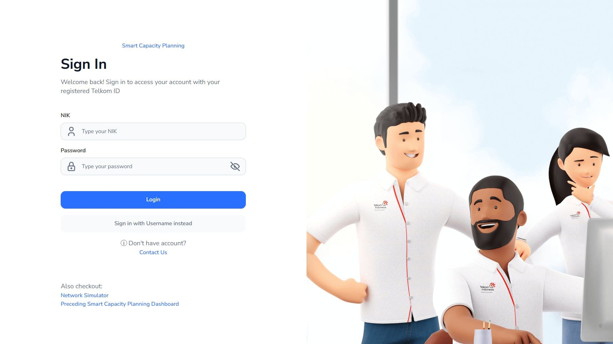
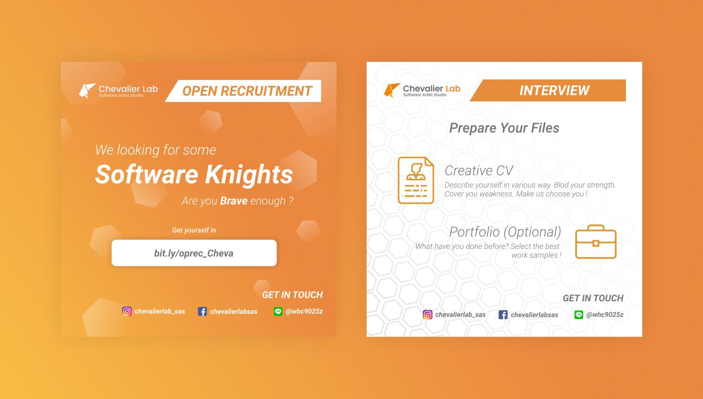
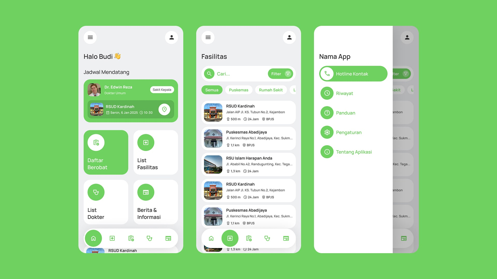

Entertainment / 01Design + Development

A world of stories.
A selection of digital products, identities, and experiments.
Different challenges. The same attention to detail.







Try another keyword or choose a different discipline.
A fresh idea, a complex challenge, or a simple hello.
I’d love to hear what you have in mind.